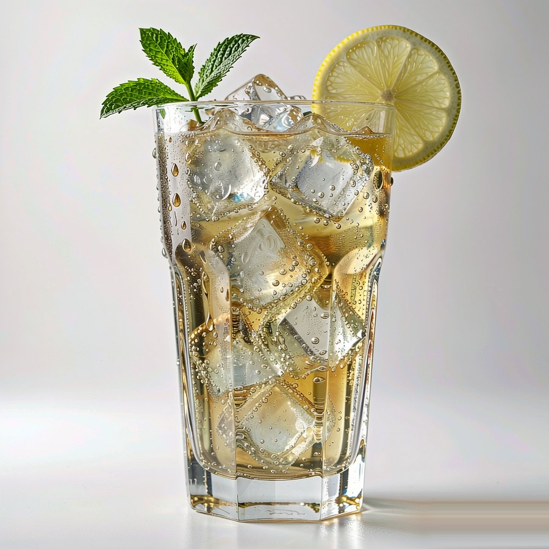
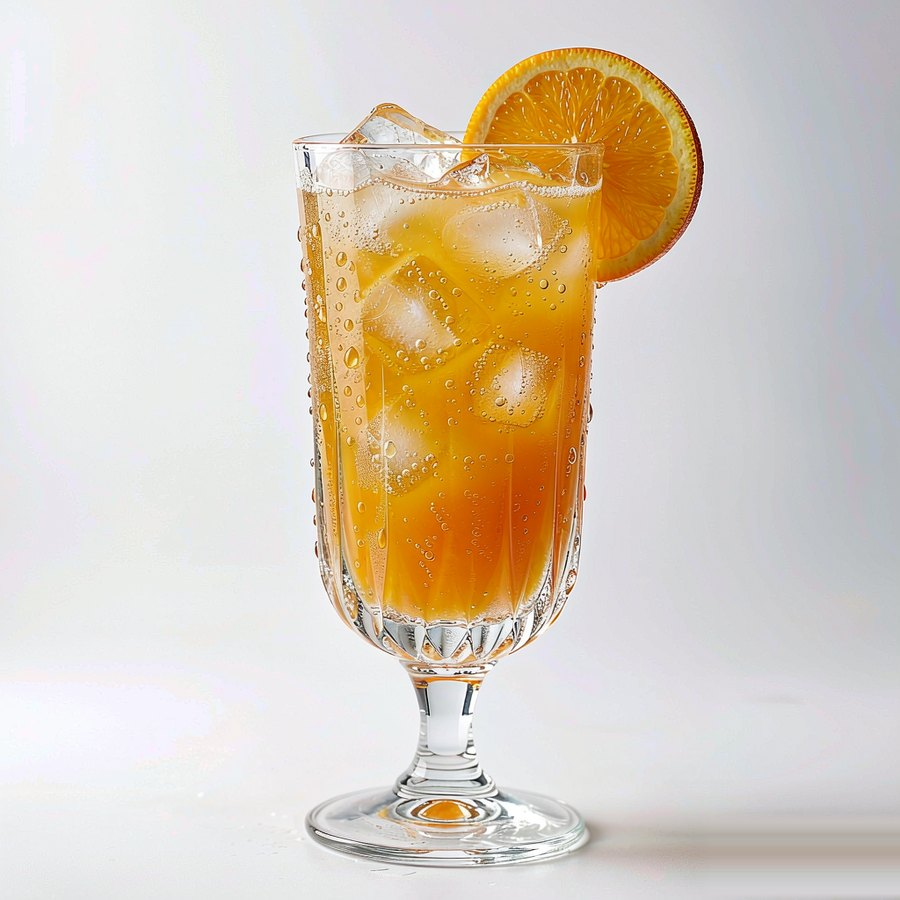
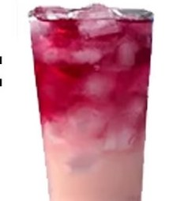
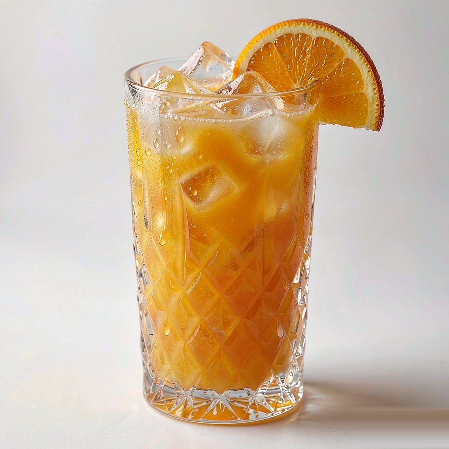
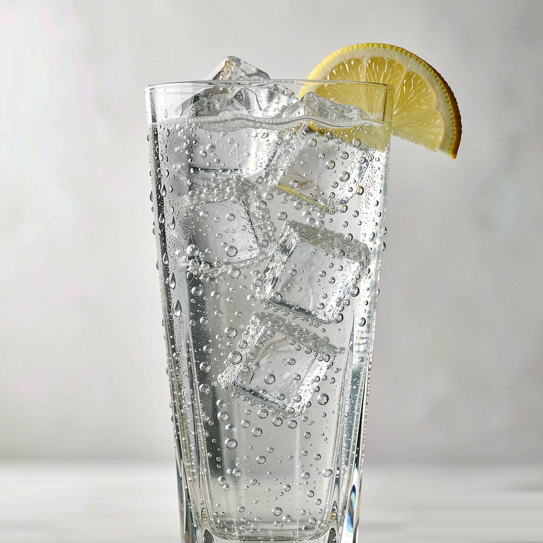
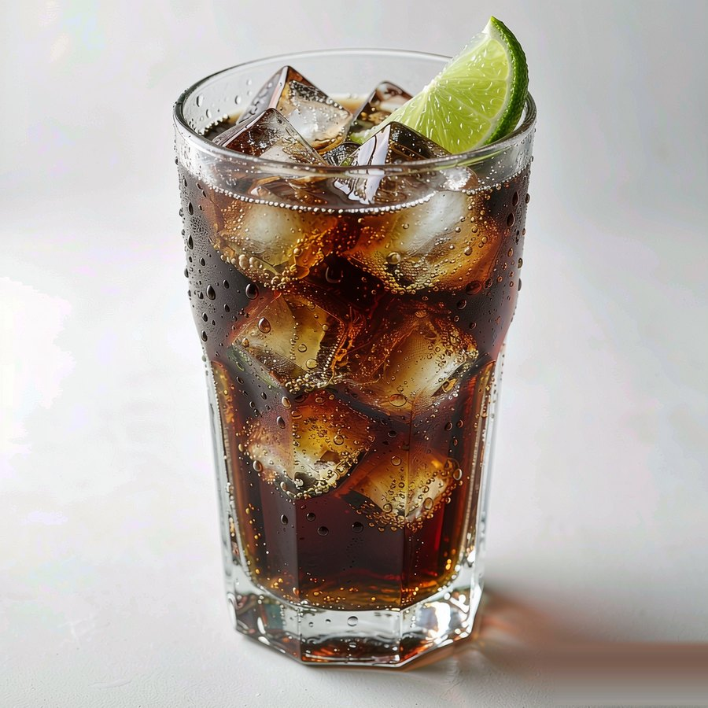
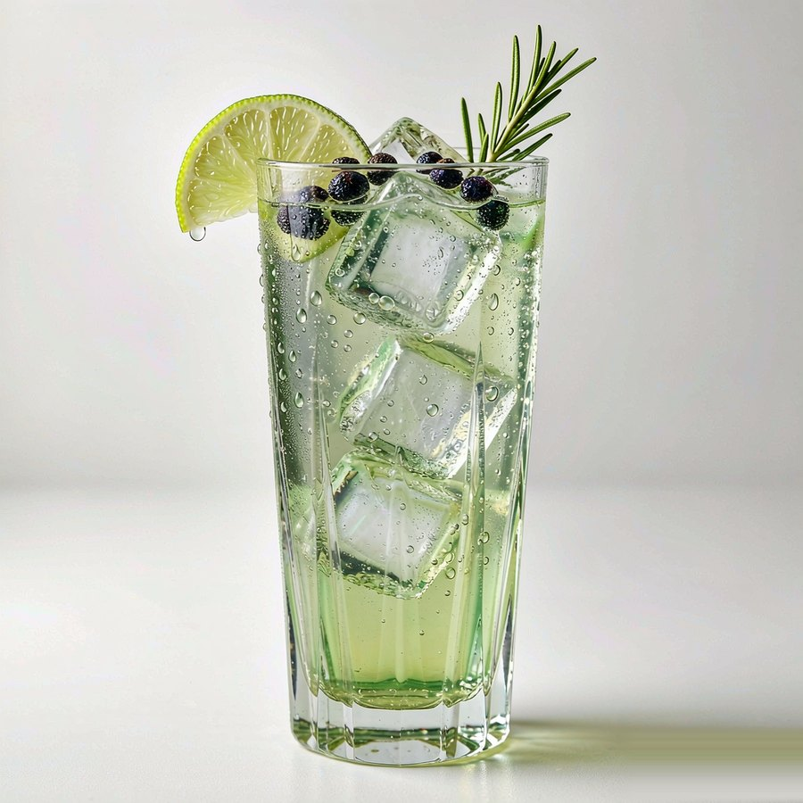

First Drink · 非专业选手友好
新手入门
不需要吧台、不需要证照。这一页解决三件事：买什么、怎么调、怎么不翻车。看完就可以去楼下便利店采购了。
按「装备 → 手法 → 避坑」的顺序读，约 5 分钟；术语一时记不住可以先跳过，调两杯回来再查更快。

Kit · 装备清单
先凑齐这八样，再谈装备升级
勾选会保存在你自己的浏览器里。括号内是平价替代方案——调酒的第一原则是"先喝起来"。八样不必一次买齐：先有冰、杯子、酸和基酒就能开调，其余用家里现成的顶上。

勾选状态只存在这台设备的浏览器里，换设备或清理缓存后不会同步，也不会上传。价格是写这份清单时的粗略参考，按当地便利店为准。
Techniques · 四种手法
手法只有四种，配方千变万化
四种手法对应四类配方：点下面的标签切换，步骤、要点和示例图会一起换。先把直调练熟，再往上加难度——多数便利店配方一辈子用不上摇壶。
Pitfalls · 避坑指南
翻车的六个元凶，配方帖不会写
照着毫升数调还是不对味？问题通常不在配方，在这些隐藏变量。按出现频率排序，建议从第一条「冰不够」开始自查；点开每条看原因和怎么改。
冰不够：喝到第三口就变水味
冰少→化水快→酒被稀释且温度上升，酒精感反而冲。杯中冰加到满杯是标准操作；摇壶里的"操作冰"另备，滤掉不入杯。大冰块比碎冰化得慢，纯饮/搅拌类优先大冰。
比例照抄：你的果汁和他的不一样甜
不同品牌果汁甜度差很多，NFC 和复原汁也不同。先按配方调，尝一口：太甜加柠檬汁或苏打，太烈加饮料，太酸加糖浆。配方是起点不是法律。
把苏打/汤力倒进摇壶：喷一身
带气饮料只能最后直调入杯、轻拌或轻提一次。摇壶里摇苏打=加压炸弹，开盖瞬间喷天花板。同理啤酒也不摇。
奶 + 酸 = 絮状物：看着像坏了
百利甜、旺仔、椰乳遇到柠檬汁等强酸会蛋白絮化，口感沙、观感差。奶系配方别加酸；想清爽选椰水而非椰奶。轻微絮状搅匀可喝，但别请客时端出来。
甜 = 没酒？果汁是最危险的伪装
40度伏特加被果汁压住味道后，摄入速度会远超纯饮。记一个硬上限：50ml 小酒版≈一瓶啤酒的酒精量；一晚两杯以内是多数人的微醺区间。强爽、果立方本身就有度数，叠加前先读瓶身。
杯子不冰：香气和气泡都跑得快
调酒前把杯子冻10分钟，或加冰搅拌降温后倒掉化水再调。温度低→气泡稳→香气收得住，同一配方能好喝一个档次。这是零成本提升。

Glossary · 术语小词典
看懂配方帖里的黑话
看不懂的先跳过，调两杯回来再查更快。右边这杯最简单的经典直调，已经把「基酒、直调、装饰」三件事摆在眼前了。

- 基酒 Base
- 一杯鸡尾酒的酒精骨架：伏特加、金酒、朗姆、威士忌、白兰地、龙舌兰六大经典，中式白酒/梅酒/枫酒是新玩家。
- 直调 Build
- 材料直接倒进加冰的杯子、轻拌即饮。便利店调酒几乎全是直调，零器具门槛。
- 摇和 Shake
- 材料+操作冰入摇壶摇8–15秒，快速降温稀释并混匀果汁/奶/蛋类。滤入新冰杯。
- 搅拌 Stir
- 吧勺沿杯壁转圈10–30秒，温和降温稀释，适合全酒类配方（如曼哈顿），保持酒体清澈。
- 装饰 Garnish
- 柠檬皮、薄荷、咖啡豆……不只是好看：皮油与香气是配方的一部分，橙皮在杯口挤一下再放。
- 微醺 Tipsy
- 放松话多但清醒可控的状态。本站全部配方的目标区间；再往上就是醉，不是微醺。
First Bottle · 第一瓶买什么
三选一，都不会吃灰
预算有限就先买 50ml 小酒版试味，确认喝得惯再上大瓶。下面三张图，分别是它们最经典、也最容易在家复刻的一杯。

最稳妥
伏特加
无色无杂味、百搭不出错，小酒版最容易买到。柠檬伏特加、莓桃伏特加、螺丝刀、伏特加苏打全靠它。新手踩雷概率最低的第一瓶。
第一杯建议：伏特加苏打 1:3，挤一片柠檬，满杯冰。
看伏特加档案 →

以上链接为公开资料，供延伸核对做法、成本与来源；本站配方以家庭口味记录为主。延伸阅读（配方与避坑思路的公开来源）：
便利店12款神仙配方 ·
爆款配方没写的四个隐藏变量 ·
便利店调酒的三笔账：成本、酒精度与翻车配方 ·
紫牛新闻：便利店"野路子调酒"调查